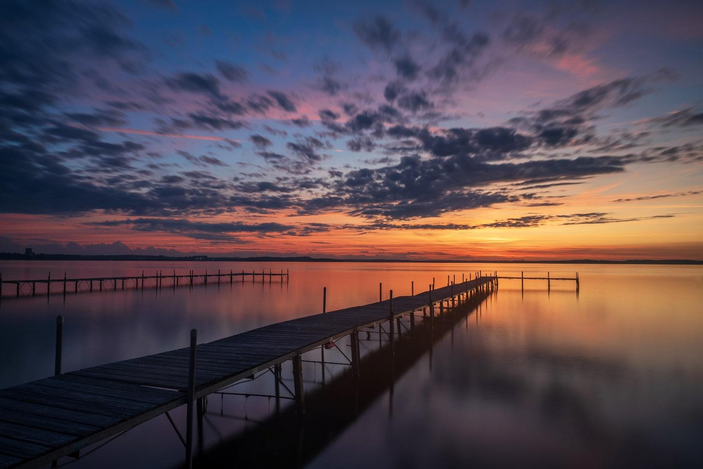
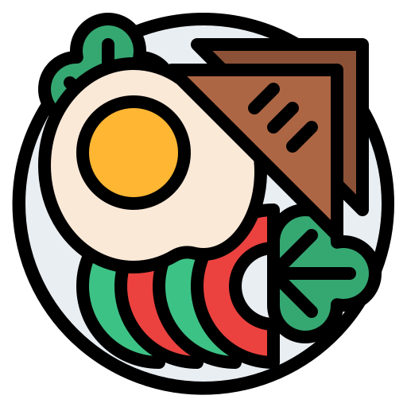
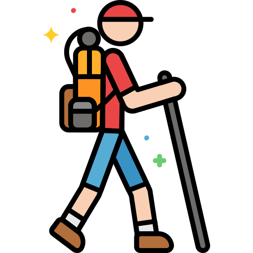
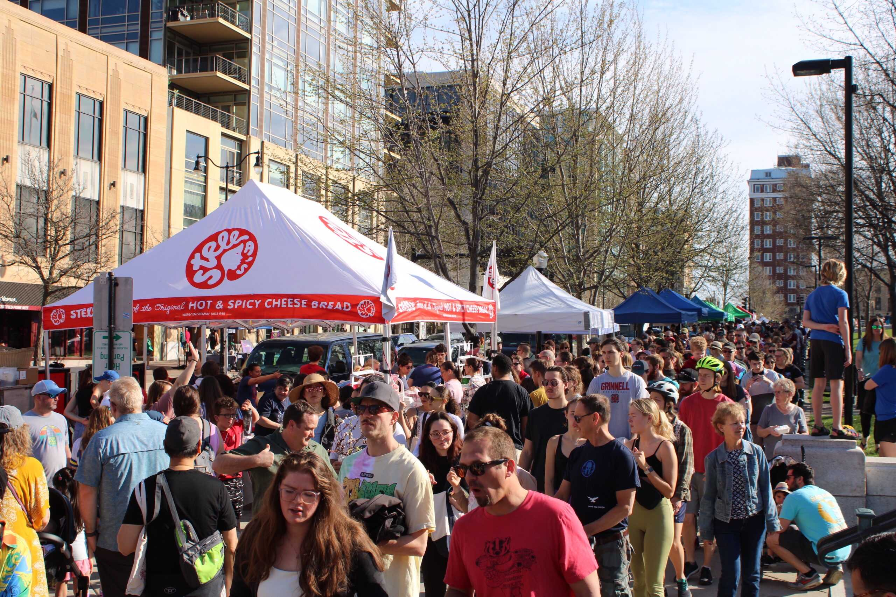
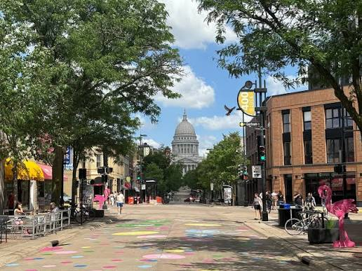
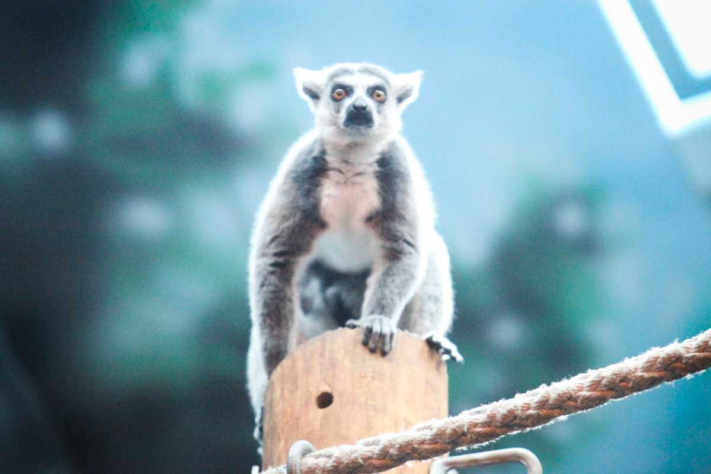

Lakeside Views
Relax at the Memorial Union Terrace and enjoy vibrant sunsets right on the water.
Explore the best local spots, lakes, and culture in Wisconsin's capital city.
Get Started
Relax at the Memorial Union Terrace and enjoy vibrant sunsets right on the water.

Enjoy world-class farm-to-table dining options located near the Capitol square.

Hike or bike along miles of scenic paths encircling Lake Mendota and Monona.
The Capitol Square hosts the country's largest producer-only farmers market every Saturday morning throughout the summer season.

A vibrant walk connecting the campus to the Capitol, packed with local eateries, coffee shops, and unique boutiques.
Learn more about State Street
An admission-free, community-supported zoo featuring animals from around the world, perfect for visitors of all ages.
Explore zoo exhibits